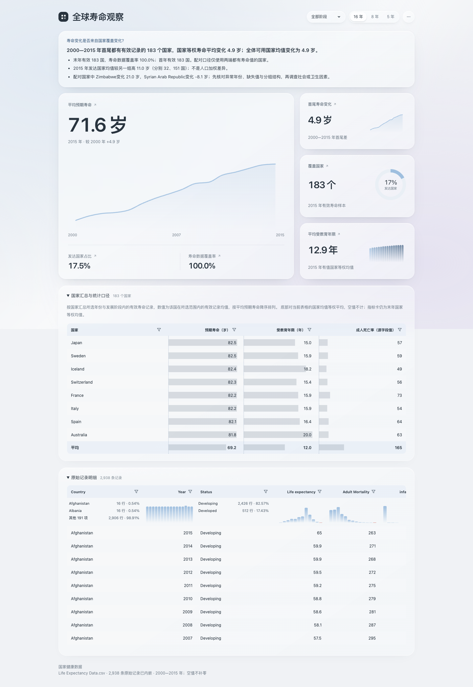
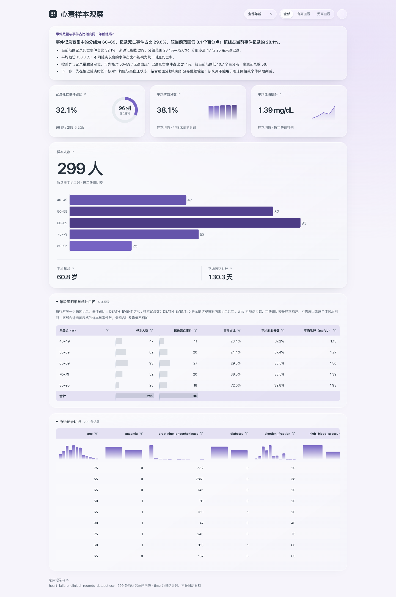
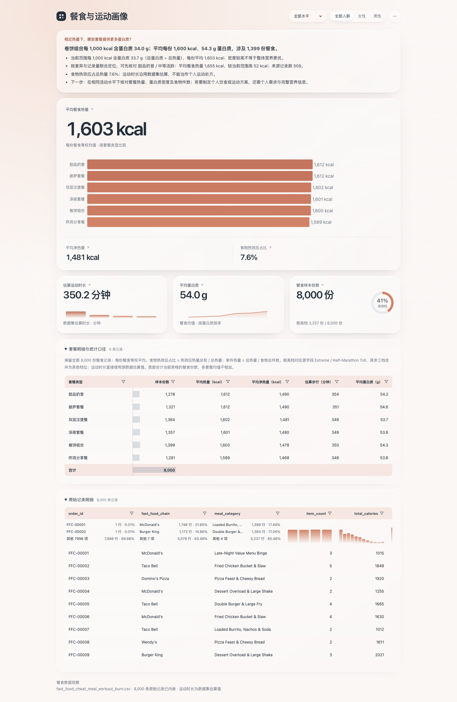
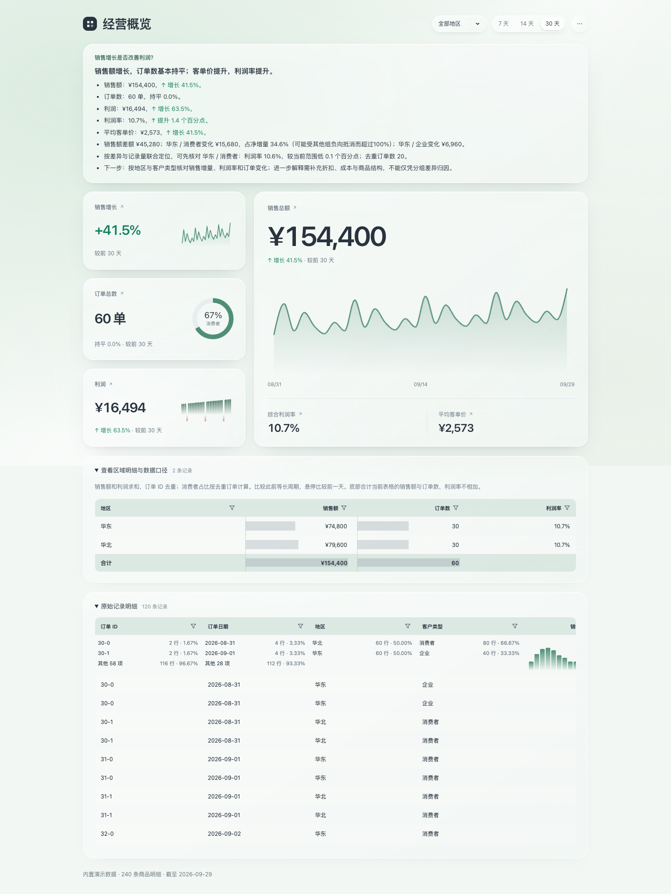

全球寿命观察
2,938 条寿命记录；首尾国家配对、发展状态差距与覆盖变化。
左侧大趋势承载长期变化，右侧小卡补充变化幅度、覆盖和教育，保持单一视觉中心。
浅蓝与中性阅读面营造平静氛围，让长期曲线和数字优先。
4 份基础模板 · 数据内嵌 · 统一筛选组件
先从数据结构与分析任务确定布局，再独立选择主题色。四份基础模板分别提供不同的阅读路径，可按当前任务参考与组合。点击截图打开完整模板，或查看 PNG 与四份基准的对照。
四份基础实现；分别参考趋势主导、指标先行、分段叙事与经营主辅布局。

2,938 条寿命记录；首尾国家配对、发展状态差距与覆盖变化。
左侧大趋势承载长期变化，右侧小卡补充变化幅度、覆盖和教育，保持单一视觉中心。
浅蓝与中性阅读面营造平静氛围，让长期曲线和数字优先。

299 条临床样本；事件数与占比、年龄和高血压状态交叉核对。
顶部三项指标先概览，下方宽幅条形图再看年龄组；随访天数不伪装成日历趋势。
鸢紫区分数据图形与浅色阅读面；事件状态由标签表达，主题色不暗示风险。

8,000 条餐食记录；热量与蛋白质密度、活动水平分层核对。
热量主区下方以运动、营养、样本三列并排呈现，辅助卡高 180px，数字与迷你图紧凑排列，明细承接核对。
杏橙串联餐食与运动各段；浅杏背景承接图形，单位和正文使用中性色。

轻量销售示例；销售增量贡献、订单与客单变化、利润质量。
左侧三张辅助卡呈现增长、订单与利润，右侧主趋势承载销售规模，标题右侧合并筛选，明细承接核对。
草绿统一趋势与卡片，浅绿背景衬托白色阅读面，正负变化另用语义色表达。